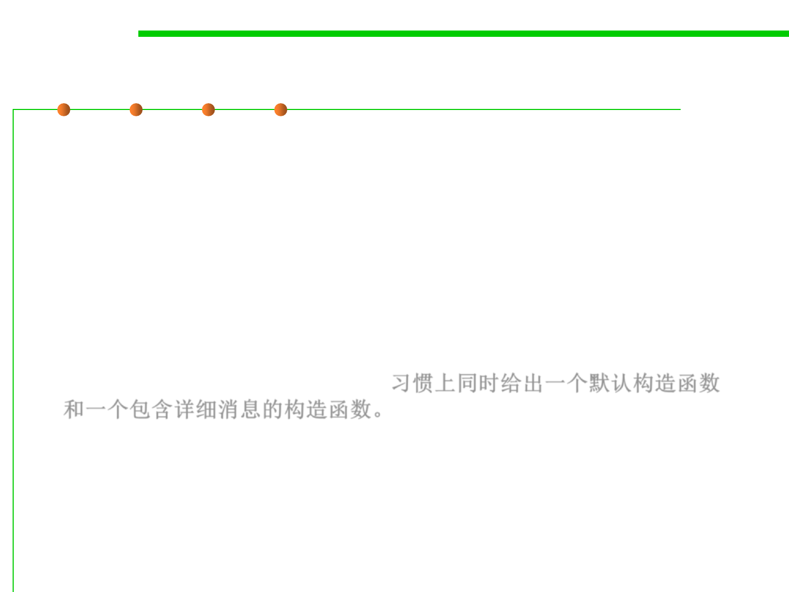

Creating Exception Classes
7.2 Error and Exception Handling
▪ Your code may run into a problem which is not adequately
described by any of the standard exception classes.
▪ In this case, it is easy enough to create your own exception class.
▪ Just derive it from Exception, or from a child class of Exception
such as IOException.
▪ It is customary to give both a default constructor and a constructor
that contains a detailed message.习惯上同时给出一个默认构造函数
和一个包含详细消息的构造函数。
– The toString method of the Throwable superclass returns a string
containing that detailed message, which is handy for debugging.